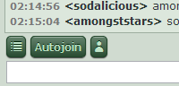

Planned Featuresfeatures that may appear in future versions
- Noise notifications: make a sound when you get tabbed in a channel you're not viewing
wsc is a chat client for dAmn-like chat servers.
wsc.dAmn is a demo of the chat client that connects to dAmn via WebSockets. This client uses HTML, CSS, and Javascript. By default, it does not use Flash.
In comparison to the official web client for dAmn; wsc connects and runs faster, has several useful extra features, is configurable, and gives you custom emoticons from the emote cloud.
wsc.dAmn has the following features:
Above the input line of the client, there are a few buttons. The multiline input button, the Autojoin button, and the emote picker button.
To join all of your autojoin channels at once, click the autojoin button. Clicking the emote picker button brings up a small popup listing the available emotes.
Clicking the multiline button changes the text field to a text area where you can enter multiple lines of text. Clicking the button again switches back to the normal text field.
In the top right hand corner of the screen, there are three buttons. The left and right arrow buttons, and the cog button.
Clicking the cog button opens the settings window. You can use the left and right arrow buttons to cycle through any channel tabs you have open.
When you are in multiple channels, you can cycle left and right through the channel tabs using key combinations.
`ctrl + [``ctrl + ]``shift + tab`wsc has a settings window. This window can be used to configure the client, and any extensions that have been loaded.